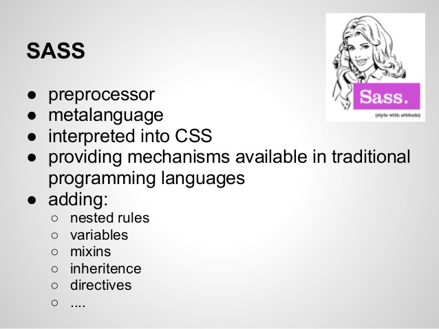

Define and describes the mechanisms used in either LESS or SASS: mixins, variables, functions, operators, nested variables.
SASS stands for Syntactically awesome style sheets. This is an extension of CSS that enables you to use items like variables, nested rules, imports, mixins, operators, and more. This comes in two syntax options; .SCSS and .SASS
Sass allows the use of variables that can store the information you can use throughout your style sheet. You can store things like colors, and other CSS values that are worth reusing. Using the $ symbol in Sass makes something variable.
Nesting can reduce the amount of code you need to write, by nesting your CSS selectors that can follow the same visual hierarchy of your HTML. while Mixins is an advantage when using preprocessors since it can take complex, long code and simplify it. Lastly, if using Sass, Operators can help perform calculations in your CSS so you may do more such as converting temperatures, having access to math functions like subtraction, multiplication, addition, and more. Sass preprocessor is a great way to reduce time coding with CSS as a standalone while having functionality on your sites!.
 Jump to top of page